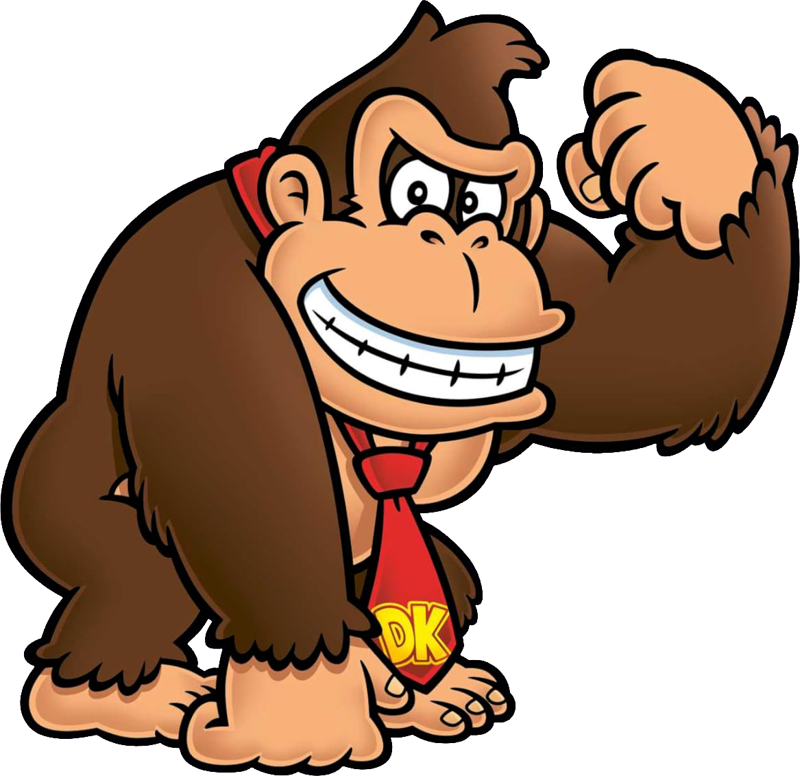

| Nombre: | Año |
|---|---|
| Donkey Kong | 1981 |
| Donkey Kong Jr. | 1982 |
| Donkey Kong 3 | 1983 |
| Donkey Kong Country | 1994 |
| Donkey Kong Country 2: Diddy's Kong Quest | 1995 |
| Donkey Kong Country 3: Dixie Kong's Double Trouble! | 1996 |
| Diddy Kong Racing | 1997 |
| Donkey Kong 64 | 1999 |
| Donkey Konga | 2003 |
| Donkey Konga 2 | 2004 |
| Donkey Kong Jungle Beat | |
| Donkey Konga 3 | 2005 |
| Donkey Kong Barrel Blast | 2007 |
| Donkey Kong Country Returns | 2010 |
| Donkey Kong Country: Tropical Freeze | 2014 |
| Donkey Kong Bananza | 2025 |
| Derechos reservados © |